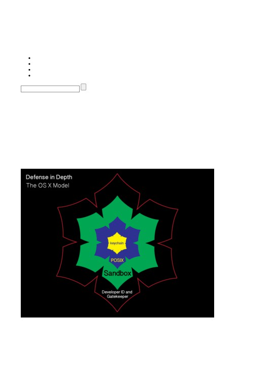
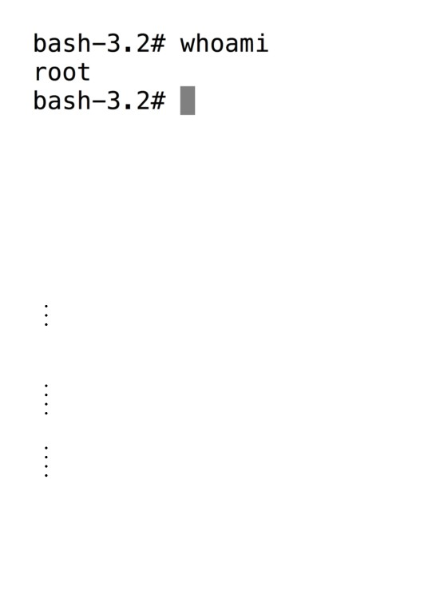
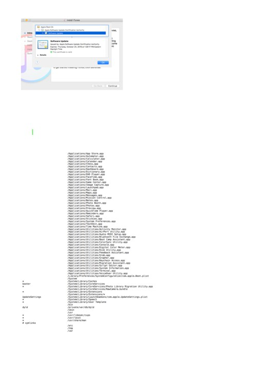
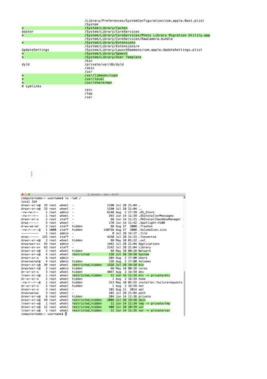
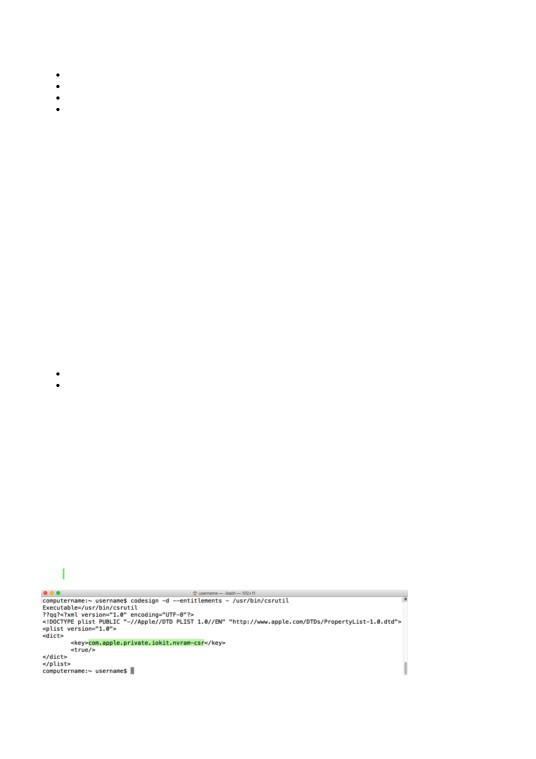
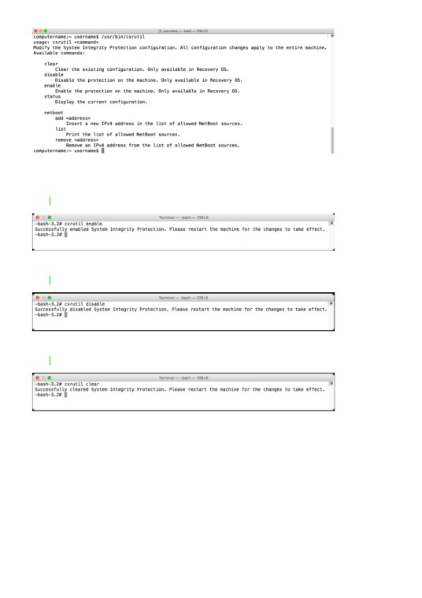
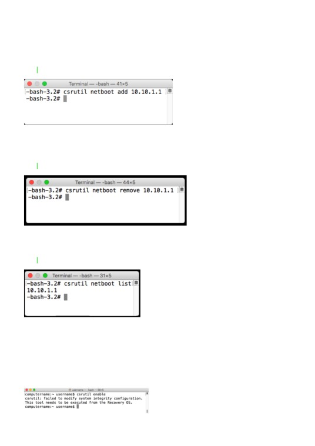
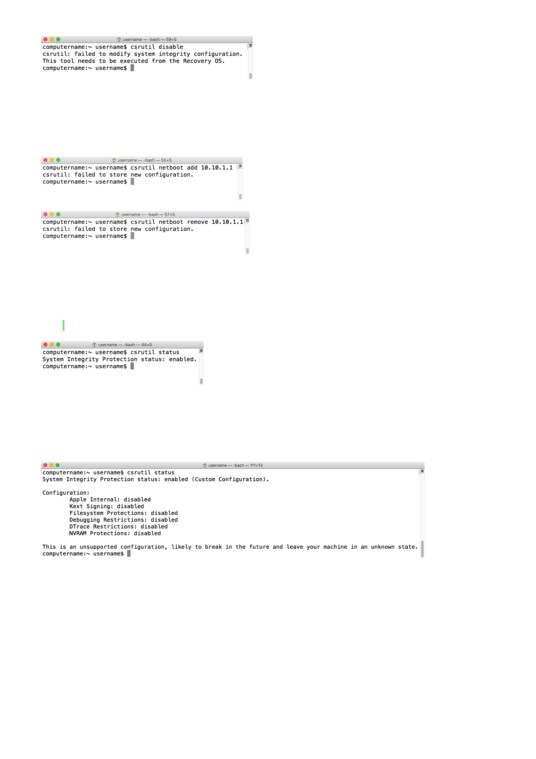
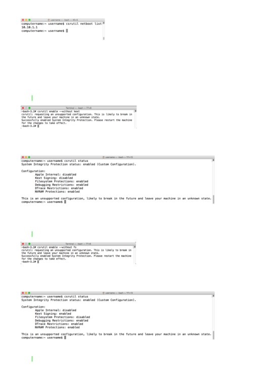

3/29/2021
System Integrity Protection - Adding another layer to Apple’s security model | Der Flounder
Seldom updated, occasionally insightful.
Type text to search here...
another layer to Apple’s security model
System Integrity Protection - Adding another layer to Apple’s
security model
October 1, 2015 rtrouton Leave a comment Go to comments
As part of the release of OS X El Capitan, Apple has added a new layer named System Integrity Protection
(SIP) to its security model. To understand how System Integrity Protection fits in, let’s first take a look at
Apple’s security model as it existed as of OS X Yosemite.
Gatekeeper is one of the outer lines of defense. It allows users to restrict which sources they can install
applications from, with the general idea being that malware will not be from an allowed source.
1/24
3/29/2021
System Integrity Protection - Adding another layer to Apple’s security model | Der Flounder
Sandboxing
OS X also uses sandboxing extensively. A sandbox typically provides a tightly controlled set of resources for
programs to run in. Network access, the ability to inspect the host system, or reading from input devices is
usually disallowed or heavily restricted.
OS X uses the Unix permissions model as defined by POSIX , which governs which users and groups can
access which files and directories. If a particular user account requests access to a particular file or directory
and does not have the necessary rights, that account is refused access.
The innermost layer of defense are keychains. Keychains are very specialized databases which are designed
for the storing of secrets, like passwords, private keys, PIN numbers, and then controlling access to those
secrets. To help protect these secrets, keychains are encrypted.
There’s an issue with this model though and it’s been there for decades. It pre-exists OS X and even pre-exists
Apple as a company. That issue is found in the POSIX permissions layer.
Root
2/24

3/29/2021
System Integrity Protection - Adding another layer to Apple’s security model | Der Flounder
Root is the superuser for a Unix system and the Unix permissions model is designed around the assumption
that root has access to everything. Apple has not ignored this issue and has put some controls in place to limit
the actual root user. These controls include disabling the root user account, discouraging its use, and
providing ways to access elevated or root privileges using other means.
However, the root user account is still present and still can do anything on the system.
System Integrity Protection
To limit what the superuser can do and add another layer to OS X’s security model, Apple has developed SIP
and deployed it as part of OS X El Capitan. SIP is designed to limit the power of root and to protect the
system even from the superuser. For more details, see below the jump.
SIP is an overall security policy with the goal of preventing system files and processes from being modified by
third parties. To achieve this, it has the following concepts:
File system protection
Runtime protection
Kernel extension protection
File system protection
SIP prevents parties other than Apple from adding, deleting or modifying directories and files stored in certain
directories:
/bin
/sbin
/usr
/System
Apple has indicated that the following directories are available for developers to access:
/usr/local
/Applications
/Library
~/Library
All directories in /usr except for /usr/local are protected by SIP.
It is possible to add, remove or change SIP-protected files and directories via an installer package which is
signed by Apple’s own certificate authority. This allows Apple to make changes to SIP-protected parts of the
OS without needing to change the existing SIP protections.
3/24

3/29/2021
System Integrity Protection - Adding another layer to Apple’s security model | Der Flounder
The certificate authority in question is reserved by Apple for their own use; Developer ID-signed installer
packages are not able to alter SIP-protected files or directories.
To define which directories are protected, Apple has currently defined two configuration files on the
filesystem. The primary one is found at the location below:
1
/System/Library/Sandbox/rootless.conf
The rootless.conf file lists all the applications and the top-level of directories which SIP is protecting.
Applications
SIP is protecting the core apps which OS X installs into /Applications and /Applications/Utilities.
4/24
3/29/2021
System Integrity Protection - Adding another layer to Apple’s security model | Der Flounder
This means it will no longer be possible to delete the applications which OS X installs, even from the
command line when using root privileges.
Directories
SIP is also protecting a number of directories and symlinks outside of /Applications and the top level of those
directories are also listed in the rootless.conf file. In addition to protections, Apple has also defined some
exceptions to SIP’s protection in the rootless.conf file, and those exceptions are marked with asterixes. These
exemptions from SIP’s protection mean that it is possible to add, remove or change files and directories within
those locations.
5/24

3/29/2021
System Integrity Protection - Adding another layer to Apple’s security model | Der Flounder
Among those exceptions are the following:
/System/Library/User Template - where OS X stores the template directories it uses when creating home
folders for new accounts.
/usr/libexec/cups - where OS X stores printer configuration information
When I’ve spoken with Apple engineers about how this configuration file was updated and if third parties
could add their own exceptions to it, it was made clear that Apple considers this file theirs and that any third
parties’ changes to it would be overwritten by Apple.
To see which files have been protected by SIP, use the ls command with the capital O flag in Terminal:
1
ls -O
SIP-protected files will be labeled as restricted.
One important think to know is that even if a symlink is protected by SIP, that does not necessarily mean that
the directory they’re linking to is being protected by SIP. At the root level of an OS X El Capitan boot drive,
there are several SIP-protected symlinks pointing to directories stored inside the root-level directory named
private.
However, when the contents of the directory named private are examined, the directories which those
symlinks point to are not protected by SIP and both they and their contents can be moved, edited or changed
6/24
3/29/2021
System Integrity Protection - Adding another layer to Apple’s security model | Der Flounder
by processes using root privileges.
In addition to the list of SIP exceptions which Apple has set in rootless.conf, there is a second list of SIP
exceptions. This list includes a number of directories and application names for third-party products. Similar
to rootless.conf, this exclusion list is Apple’s and any third parties’ changes to it will be overwritten by Apple.
1
/System/Library/Sandbox/Compatibility.bundle/Contents/Resources/paths
1
/System/Library/CFMSupport
2
/System/Library/CoreServices/Applications/Directory Utility.app/Contents/PlugIns/ADmitMac.d
3
/System/Library/CoreServices/CoreTypes.bundle/Contents/Library/iLifeSlideshowTypes.bundle
4
/System/Library/CoreServices/SecurityAgentPlugins/CentrifyPAM.bundle
5
/System/Library/CoreServices/SecurityAgentPlugins/CentrifySmartCard.bundle
6
/System/Library/CyborgRAT.kext
7
/System/Library/Extensions/IONetworkingFamily.kext/Contents/PlugIns/AppleRTL815XComposite10
8
/System/Library/Extensions/IONetworkingFamily.kext/Contents/PlugIns/AppleRTL815XEthernet109
9
/System/Library/Filesystems/DAVE
10
/System/Library/Filesystems/fusefs_txantfs.fs
11
/System/Library/Filesystems/ufsd_NTFS.fs
12
/System/Library/Fonts/encodings.dir
13
/System/Library/Fonts/fonts.dir
14
/System/Library/Fonts/fonts.list
15
/System/Library/Fonts/fonts.scale
16
/System/Library/HuaweiDataCardDriver.kext
17
/System/Library/LaunchAgents/com.paragon.NTFS.notify.plist
18
/System/Library/LaunchDaemons/com.absolute.rpcnet.plist
19
/System/Library/LaunchDaemons/com.intel.haxm.plist
20
/System/Library/LaunchDaemons/com.seagate.TBDecorator.plist
21
/System/Library/LaunchDaemons/de.novamedia.nmnetmgrd.plist
22
/System/Library/PrivateFrameworks/BrowserKit.framework
23
/System/Library/PrivateFrameworks/Helium.framework
24
/System/Library/PrivateFrameworks/LiveType.framework
25
/System/Library/PrivateFrameworks/ProKit.framework
26
/System/Library/PrivateFrameworks/iLifeSlideshow.framework
27
/System/Library/QuickTime/QuickTimeMPEG2.component
28
/System/Library/QuickTime/WiretapDataHandler.component
29
/System/Library/Services/KAVService.service
30
/System/Library/Services/Send to Kindle.workflow
31
/System/Library/StartupItems
32
/System/Library/USBExpressCardCantWake_Huawei.kext
33
/sbin/amconfig
34
/sbin/fsck_ufsd_NTFS
35
/sbin/mount_cifs
7/24
3/29/2021
System Integrity Protection - Adding another layer to Apple’s security model | Der Flounder
36
/sbin/mount_fusefs_txantfs
37
/sbin/mount_ufsd_NTFS
38
/sbin/mount_vmhgfs
39
/sbin/newfs_fusefs_txantfs
40
/sbin/newfs_ufsd_NTFS
41
/sbin/rpctool
42
/usr/X11
43
/usr/bin/FAHClient
44
/usr/bin/FAHCoreWrapper
45
/usr/bin/FAHViewer
46
/usr/bin/VBoxAutostart
47
/usr/bin/VBoxBalloonCtrl
48
/usr/bin/VBoxHeadless
49
/usr/bin/VBoxManage
50
/usr/bin/VBoxVRDP
51
/usr/bin/VirtualBox
52
/usr/bin/cups-calibrate
53
/usr/bin/escputil
54
/usr/bin/extlookup2hiera
55
/usr/bin/facter
56
/usr/bin/gnutar
57
/usr/bin/kashell
58
/usr/bin/kav
59
/usr/bin/nortonscanner
60
/usr/bin/nortonsettings
61
/usr/bin/nvconfigurator
62
/usr/bin/nvpmgr
63
/usr/bin/phidgetwebservice21
64
/usr/bin/puppet
65
/usr/bin/shake
66
/usr/bin/stkLaunchAgent.sh
67
/usr/bin/testpattern
68
/usr/bin/vagrant
69
/usr/bin/vboxwebsrv
70
/usr/discreet
71
/usr/include/gutenprint
72
/usr/lib/cshost
73
/usr/lib/gutenprint
74
/usr/lib/libMatroxMpeg2IFrameCodec.dylib
75
/usr/lib/libUFSDNTFS.dylib
76
/usr/lib/libgutenprint.2.0.3.dylib
77
/usr/lib/libgutenprint.2.dylib
78
/usr/lib/libgutenprint.a
79
/usr/lib/libgutenprint.dylib
80
/usr/lib/libgutenprint.la
81
/usr/lib/libnv6.dylib
82
/usr/lib/libnv6audit.dylib
83
/usr/lib/libnv6cli.dylib
84
/usr/lib/libnv6clit.dylib
8/24
3/29/2021
System Integrity Protection - Adding another layer to Apple’s security model | Der Flounder
85
/usr/lib/libnv6foreignras.dylib
86
/usr/lib/libnv6foreignrast.dylib
87
/usr/lib/libnv6gui.dylib
88
/usr/lib/libnv6guit.dylib
89
/usr/lib/libnv6http.dylib
90
/usr/lib/libnv6jobs.dylib
91
/usr/lib/libnv6jobst.dylib
92
/usr/lib/libnv6json.dylib
93
/usr/lib/libnv6jsont.dylib
94
/usr/lib/libnv6ndmp.dylib
95
/usr/lib/libnv6plugin.dylib
96
/usr/lib/libnv6plugint.dylib
97
/usr/lib/libnv6reports.dylib
98
/usr/lib/libnv6reportst.dylib
99
/usr/lib/libnv6scsi.dylib
100
/usr/lib/libnv6stats.dylib
101
/usr/lib/libnv6statst.dylib
102
/usr/lib/libnv6t.dylib
103
/usr/lib/libnv6xctl.dylib
104
/usr/lib/libnv6xpm.dylib
105
/usr/lib/libphidget21.jnilib
106
/usr/lib/libwkextmac.dylib
107
/usr/lib/pam/pam_centrifydc.so
108
/usr/lib/pkgconfig/gutenprint.pc
109
/usr/libexec/aksusbd
110
/usr/libexec/com.matrox.vpg.Agent
111
/usr/libexec/com.matrox.vpg.MaxAgent
112
/usr/libexec/cups/backend/cifs
113
/usr/libexec/hasplmd
114
/usr/local
115
/usr/netvault
116
/usr/sbin/AELWriter
117
/usr/sbin/cups-genppd.5.2
118
/usr/sbin/cups-genppdupdate
119
/usr/sbin/fsctl_ufsd
120
/usr/sbin/jamf
121
/usr/sbin/jamfAgent
122
/usr/sbin/m_agent
123
/usr/sbin/m_agent_upgrade
124
/usr/sbin/nipalsm
125
/usr/sbin/nmnetmgrd
126
/usr/sbin/nmnetmgrd_launchd
127
/usr/sbin/nmnetmgrd_launchd_MT
128
/usr/sbin/palModuleMgr.sh
129
/usr/sbin/proxyhelper
130
/usr/sbin/qmasterca
131
/usr/sbin/qmasterd
132
/usr/sbin/qmasterprefs
133
/usr/sbin/qmasterqd
9/24
3/29/2021
System Integrity Protection - Adding another layer to Apple’s security model | Der Flounder
134
/usr/sbin/rpc.net
135
/usr/sbin/rpcset
136
/usr/sbin/rpcstartup
137
/usr/sbin/setbufsize
138
/usr/share/centrifydc
139
/usr/share/cshost
140
/usr/share/cups/calibrate.ppm
141
/usr/share/cups/mime/pharos.convs
142
/usr/share/cups/usb
143
/usr/share/doc/facter
144
/usr/share/doc/puppet
145
/usr/share/gutenprint
146
/usr/share/locale/ca/gutenprint_ca.po
147
/usr/share/locale/cs/gutenprint_cs.po
148
/usr/share/locale/da/gutenprint_da.po
149
/usr/share/locale/de/gutenprint_de.po
150
/usr/share/locale/el/gutenprint_el.po
151
/usr/share/locale/en_GB/gutenprint_en_GB.po
152
/usr/share/locale/es/gutenprint_es.po
153
/usr/share/locale/fi/gutenprint_fi.po
154
/usr/share/locale/fr/gutenprint_fr.po
155
/usr/share/locale/gl/gutenprint_gl.po
156
/usr/share/locale/hu/gutenprint_hu.po
157
/usr/share/locale/it/gutenprint_it.po
158
/usr/share/locale/ja/gutenprint_ja.po
159
/usr/share/locale/nb/gutenprint_nb.po
160
/usr/share/locale/nl/gutenprint_nl.po
161
/usr/share/locale/pl/gutenprint_pl.po
162
/usr/share/locale/pt/gutenprint_pt.po
163
/usr/share/locale/ru/gutenprint_ru.po
164
/usr/share/locale/sk/gutenprint_sk.po
165
/usr/share/locale/sl/gutenprint_sl.po
166
/usr/share/locale/sv/gutenprint_sv.po
167
/usr/share/locale/tr/gutenprint_tr.po
168
/usr/share/locale/uk/gutenprint_uk.po
169
/usr/share/locale/vi/gutenprint_vi.po
170
/usr/share/locale/zh_CN/gutenprint_zh_CN.po
171
/usr/share/locale/zh_TW/gutenprint_zh_TW.po
Runtime protection
10/24

3/29/2021
System Integrity Protection - Adding another layer to Apple’s security model | Der Flounder
SIP’s protections are not limited to protecting the system from filesystem changes. There are also system calls
which are now restricted in their functionality.
task_for_pid() / processor_set_tasks() fail with EPERM
Mach special ports are reset on exec(2)
dyld environment variables are ignored
DTrace probes unavailable
However, SIP does not block inspection by the developer of their own applications while they’re being
developed. Xcode’s tools will continue to allow apps to be inspected and debugged during the development
process.
For more details on this, I recommend taking a look at Apple’s developer documentation for SIP.
Kernel extension protection
SIP blocks installation of unsigned kernel extensions. In order to install a kernel extension on OS X El Capitan
with SIP enabled, a kernel extension must:
1. Be signed with a Developer ID for Signing Kexts certificate
2. Install into /Library/Extensions
If installing an unsigned kernel extension, SIP will need to be disabled first.
Managing SIP
To help ensure that third parties will not be able to disable these protections, SIP’s configuration is stored in
NVRAM rather than in the file system itself and is only configurable if the Mac is booted into one of two
environments:
The OS X Installer environment
Note: The OS X Installer and OS X Recovery environments are in fact the same environment from OS X’s
perspective, with the main difference being that the OS X Installer environment contains a copy of the
installation files for OS X and the Recovery environment does not.
Because SIP’s configuration is stored in NVRAM, SIP’s protection settings will apply to the entire machine
and will persist even if the OS is reinstalled.
SIP can be managed to the extent of turning it on, turning it off, adding and removing IP addresses into a
NetBoot whitelist and reporting on whether SIP is enabled or disabled. All changes to SIP’s configuration also
require a reboot before they take effect.
The tool used to manage SIP is /usr/bin/csrutil. csrutil is able to work with SIP because it has a unique
application entitlement assigned to it by Apple. This entitlement is viewable using the codesign command
shown below:
1
codesign -d --entitlements - /usr/bin/csrutil
When you run csrutil without any associated commands, it will pull up the help page.
11/24

3/29/2021
System Integrity Protection - Adding another layer to Apple’s security model | Der Flounder
When booted from Recovery, the command used to enable SIP is csrutil enable:
1
csrutil enable
When booted from Recovery, the command used to turn SIP off is csrutil disable:
1
csrutil disable
When booted from Recovery, the command used to reset SIP’s configuration is csrutil clear:
1
csrutil clear
When csrutil clear is run, SIP goes back to its factory-default settings. That means SIP is enabled if it was
disabled previously and any custom configuration is cleared out.
SIP and NetBoot
One of the custom configuration options available in SIP is the ability to set a whitelist for approved NetBoot
servers. This whitelist is needed because the bless command in El Capitan is restricted by SIP from writing to
NVRAM. This affects bless‘s ability to set Macs to boot from NetBoot sets because it needs to write that
information to NVRAM.
This whitelist defines by IP address which NetBoot servers are trusted in your environment. Once those IP
addresses are part of the whitelist, the bless command can set a Mac to NetBoot from a NetBoot set on a
trusted NetBoot server. For more information about whether or not you need to whitelist your NetBoot
server(s), please see the link below:
12/24

3/29/2021
System Integrity Protection - Adding another layer to Apple’s security model | Der Flounder
To help folks who need to use bless to set a NetBoot set as a startup drive, the csrutil tool includes
functionality to add NetBoot servers to the whitelist. While booted from Recovery, use csrutil netboot add
followed by an IP address to set the IP as being that of a NetBoot server approved for use by the bless
command:
1
csrutil netboot add ip.address.here
While booted from Recovery, you can also remove NetBoot servers from the whitelist. To do this, use csrutil
netboot remove followed by the IP address that you want to remove from the whitelist.
1
csrutil netboot remove ip.address.here
To see which NetBoot servers have been added to the whitelist, run csrutil netboot list.
1
csrutil netboot list
Running csrutil outside Recovery
If you try to run the csrutil enable and csrutil disable commands while booted from a regular boot drive, you
will receive a message that these commands need to be run from Recovery. The current SIP configuration will
remain unchanged.
13/24

3/29/2021
System Integrity Protection - Adding another layer to Apple’s security model | Der Flounder
Likewise, if you try to run the csrutil netboot add and csrutil netboot remove commands while booted from
a regular boot drive, you will receive the message that csrutil was unable to save the configuration and the
status of the NetBoot whitelist will remain unchanged.
What can be run while booted from a regular boot drive is csrutil’s reporting functions. For example, to learn
if SIP is enabled or disabled, run csrutil status.
1
csrutil status
This command can be run without root privileges and will tell you if SIP is on or off.
If SIP is off, you may receive a confusing message which indicates that SIP is enabled, followed by a list of
individual SIP functions which are disabled. If all functions listed are showing as being disabled, SIP is
actually completely disabled; it’s just confusingly worded.
I actually have a bug report on this message. For those who wish to dupe it, it is bug ID 22361698 and is
cross-posted to Open Radar here:
Likewise, you can run csrutil netboot list and it will report on which IPs have been set as allowed NetBoot
sources when using the bless command.
14/24

3/29/2021
System Integrity Protection - Adding another layer to Apple’s security model | Der Flounder
Other custom SIP configuration options
It is also possible to enable SIP protections and selectively disable aspects of it, by adding one or more flags to
the csrutil enable command. All require being booted from Recovery in order to set them:
Enable SIP and allow installation of unsigned kernel extensions
1
csrutil enable --without kext
When this option is enabled, running csrutil status should produce output similar to this.
Enable SIP and disable filesystem protections
1
csrutil enable --without fs
When this option is enabled, running csrutil status should produce output similar to this.
Enable SIP and disable debugging restrictions
1
csrutil enable --without debug
15/24